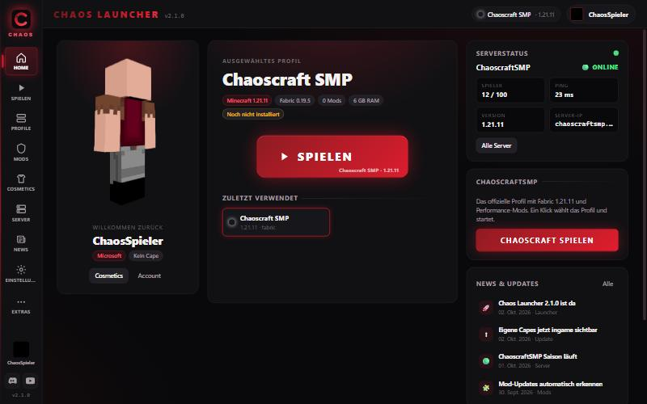
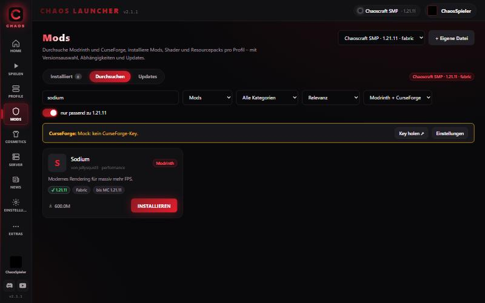
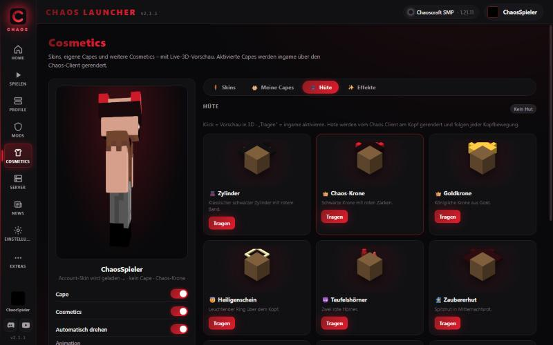
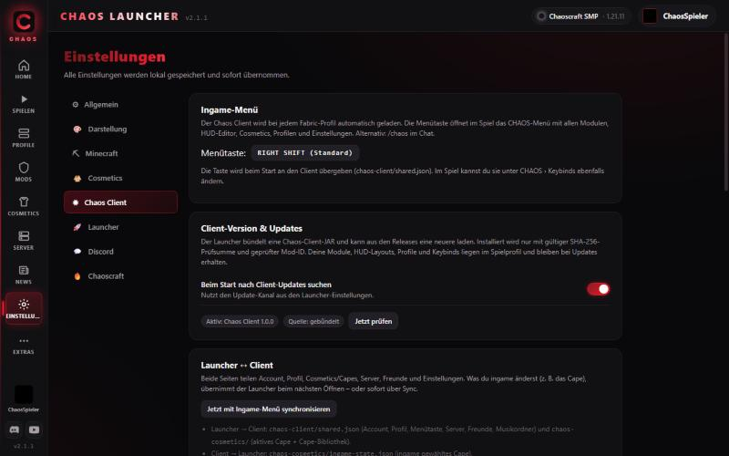

🧩
Profile & Loader
Vanilla, Fabric, Forge, NeoForge, Quilt. Eigene RAM-, JVM- und Auflösungseinstellungen pro Profil, Vorlagen für PvP, SMP, Shader und Chaoscraft.
Der Launcher für ChaoscraftSMP: Profile mit Fabric, Forge & NeoForge, Mod-Manager mit Modrinth und CurseForge, eigene Capes, Hüte und Effekte, die alle Chaos-Spieler ingame sehen – und der Chaos Client mit Ingame-Menü auf RIGHT SHIFT.

Gebaut mit Tauri und Rust – klein, schnell, sicher. Deine Tokens werden mit Windows DPAPI verschlüsselt und verlassen den Launcher nur Richtung Microsoft und Mojang.
Vanilla, Fabric, Forge, NeoForge, Quilt. Eigene RAM-, JVM- und Auflösungseinstellungen pro Profil, Vorlagen für PvP, SMP, Shader und Chaoscraft.
Modrinth und CurseForge in einer Suche. Kategorien, Versionen, Abhängigkeiten automatisch, Update-Prüfung, Shader & Resourcepacks.
Eigene Capes hochladen oder aus 16 HD-Vorlagen wählen, 12 Hüte, 14 Partikel-Effekte – mit 3D-Vorschau und sichtbar für alle Chaos-Spieler.
Wird bei jedem Fabric-Profil automatisch geladen: Ingame-Menü, HUD-Editor, 44 Module, Keybinds, Profile. Kein Cheat, keine Server-Regel-Verstöße.
Serverstatus live, „CHAOSCRAFT SPIELEN“ richtet das passende Profil mit allen Mods ein und verbindet direkt.
Downloads nur über HTTPS mit Prüfsummen, Dateiprüfung vor Verwendung, Open Source-Lizenzen im Launcher einsehbar.


Der Chaos Client ist eine Fabric-Mod, die der Launcher in jedes Fabric-Profil legt. Im Spiel öffnet RIGHT SHIFT ein modernes Menü mit Suche, 15 Kategorien und Modul-Kacheln – alles per Klick konfigurierbar und pro Client-Profil gespeichert.
Aktuelle Client-Version: – · Minecraft 1.21.11 · Fabric

Cape, Hut und Effekt werden vor jedem Spielstart automatisch mit der Chaos-Cosmetics-API abgeglichen. Jeder mit Chaos Launcher sieht dich so, wie du dich eingestellt hast – Spieler ohne Launcher sehen normales Minecraft.
Dieselben News erscheinen auch im Launcher auf der Startseite.
Der Installer ist noch nicht signiert. Klicke auf „Weitere Informationen“ → „Trotzdem ausführen“. Die Datei kannst du mit der SHA-256-Prüfsumme unten vergleichen.
Nein. Der Launcher erkennt die benötigte Java-Version und lädt Temurin automatisch herunter.
Über Microsoft mit dem Device-Code: Du bestätigst die Anmeldung im Browser, der Launcher fragt nie nach deinem Passwort. Mehrere Accounts sind möglich.
Der Chaos Client enthält ausschließlich Anzeige-, Komfort- und Kosmetikfunktionen (HUD, Zoom, Fullbright, Cosmetics). Keine Funktion verschafft Spielvorteile oder greift in das Gameplay ein. Prüfe trotzdem die Regeln des jeweiligen Servers.
Ja, alle Spieler mit Chaos Launcher sehen Cape, Hut und Effekt. Dafür lädt der Launcher deine Auswahl automatisch zur Chaos-Cosmetics-API hoch – dein Microsoft-Token wird dabei nie übertragen.
Unter %APPDATA%\chaos-launcher. Tokens werden mit Windows DPAPI verschlüsselt. Logs findest du im Ordner logs.
Version wird geladen …
SHA-256: –
Werde Teil der Community.
Fragen, Bugs, Ideen, Events – alles läuft über Discord. Auf YouTube gibt es Videos zu ChaoscraftSMP und zum Launcher.
chaoscraftsmp.duckdns.org